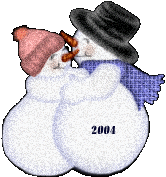
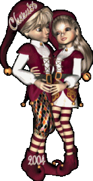
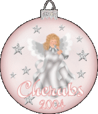

Christmas Keepsakes 2004
Please Save to your own harddrive..
and link back to...
http://www.thesitefights.com/cherubs/
#1
#2

#3
#4
#5
#6
#7

#8
#9
#10

#11

Please Sign our Cherub Guestbook *Smile*
|
Sign My Spiritbook
|

|
View My Spiritbook
|
Click Here for
New Year Memories
Page By: Lady Lisa
Thanks For Stopping By *SMILE*